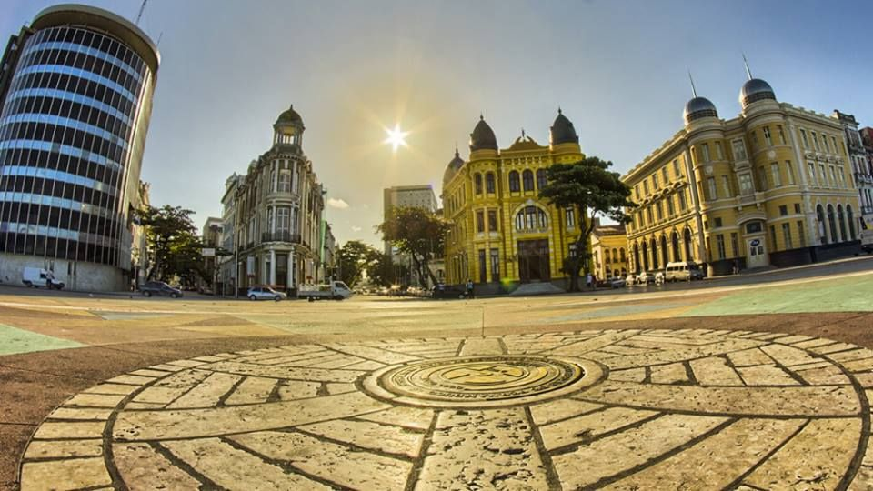

História de Recife
Recife é um município brasileiro, capital do estado de Pernambuco,
localizamente 218 km², é formado por uma planície aluvial, tendo as ilhas,
penínsudo na Região Nordeste do país. Com área territorial de aproximadalas e
manguezais como suas principais características geográficas.

Marco Zero
O Marco Zero em Recife é um dos destinos históricos mais
importantes do nordeste do país. A região reúne atrações históricas
e culturais, centro de artesanato e ótimos restaurantes. Além disso,
é o principal local do carnaval de Pernambuco, reunindo música,
alegria e muita festa. O espaço surgiu junto à construção da cidade
e também é responsável por preservar grande parte da história local.
Pela região, é possível apreciar construções da época do Brasil
Colonial, assim como estátuas, parques e monumentos históricos. Na
mesma praça também está situada a rosa-dos-ventos do Marco Zero. A
atração foi anexada à praça na década de 1930, pelo artista
pernambucano Cícero Dias. Uma curiosidade é que o marco reúne todas
as distâncias oficiais de Pernambuco, dando origem ao termo ‘km 0’
do estado.